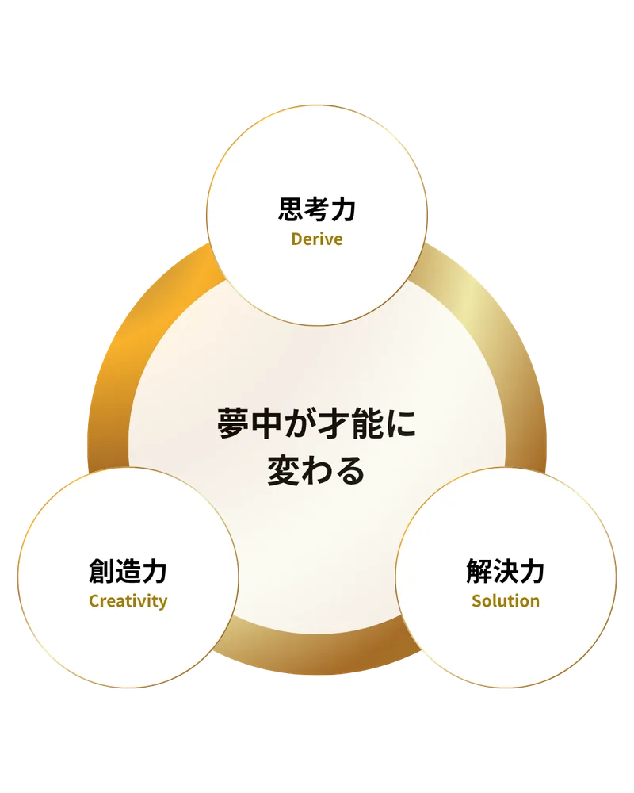
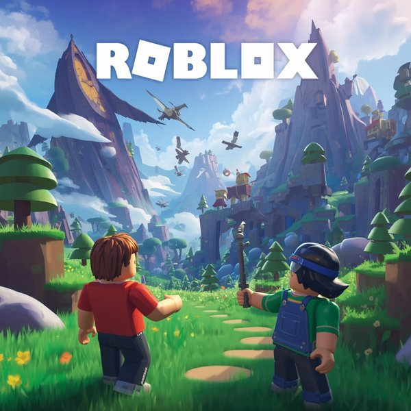
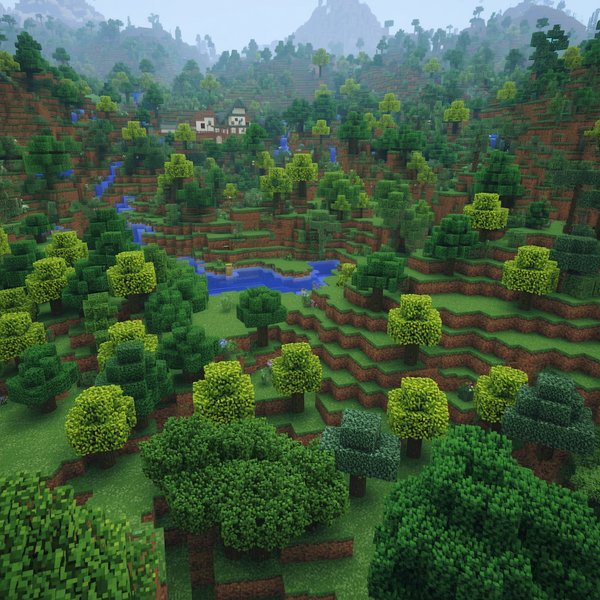
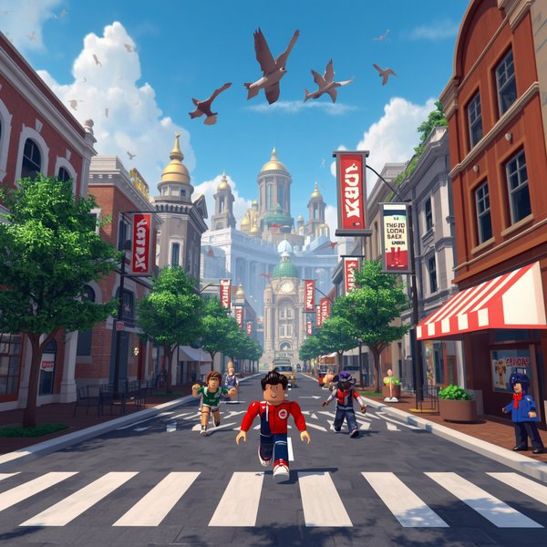
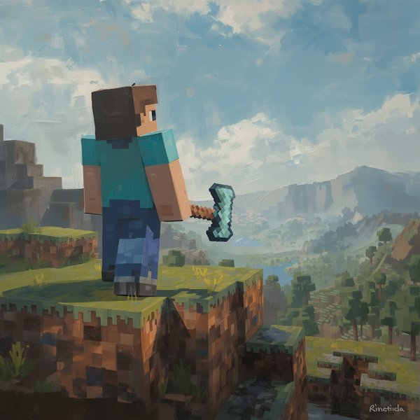
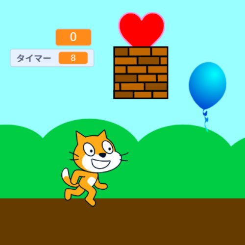
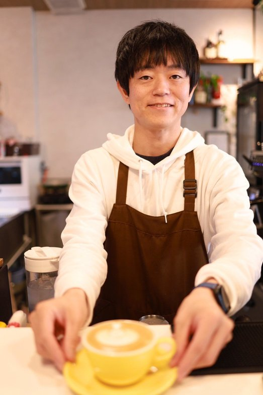

ゲームの遊びが
学びに変わる瞬間を
いま夢中になっているゲームを、遊ぶ側からつくる側へ。 自然な試行錯誤のなかで、これからの社会で求められる課題解決力を育てます。
堺美原校（本校） 富田林喜志校 月2回・1コマ90分
自然な試行錯誤で、
課題解決力を育む
ゲームの世界で、ゼロからアイデアを出し、課題を見つけ、 プログラミングを通して形にしていく。その夢中になる時間こそが、 これからの社会で求められる力を育てます。
-
思考力Derive
問いを立て、情報を整理し、論理的に考える力
-
創造力Creativity
独創的なアイデアを生み出し、形にする力
-
解決力Solution
困難に直面し、試行錯誤を重ねて乗り越える力





興味から始まる学び
入り口はお子さまの「好き」から。どこからでも学べるので、やりたいことから始められます。
-
マインクラフト
相棒のエージェントをプログラムで動かして整地したり、家を建てたり、素材を集めたり。 「どうすればできるか？」という試行錯誤を通じて、創造力や発想力を伸ばします。
※マインクラフトのアカウントが別途必要です（詳しくは無料体験でご案内します）
ビジュアルブロック JavaScript Python -

Scratch
全世界の教育機関が愛用する無料ソフト「Scratch」。 ドラッグ＆ドロップの簡単なマウス操作で指示を出し、その結果をすぐに確かめられるので、 ゲーム感覚で楽しく2Dコンテンツの開発ができます。
ビジュアルブロック -
ロブロックス
3D空間におけるオリジナルゲーム制作に挑戦。 ステージづくりやギミック制作、アイテム配置などを通して、創造力や発想力を伸ばします。 遊ぶだけではなく、“作る側”として学べる実践型コンテンツです。
Lua
実生活にも活きる、パソコンスキル
-
タイピング練習
基礎から丁寧に指導し、入力スピードと正確さを高めていきます。
-
デザイン知識
見やすく伝わるデザインの基本を学ぶことができます。
-
生成AIの活用
最先端の生成AI技術を活用し、アイデアを広げていきます。
Also Available ／ ご要望に応じて幅広く対応
- Word文書作成やレポート作成をサポート
- Excel表計算やグラフ作成でデータを活用
- PowerPoint伝わるプレゼン資料を一緒に作成
- HP制作自分だけのホームページ制作に挑戦
- プレゼンテーション発表資料づくりや発表練習もサポート
プログラミング的概念
どこからでも学べるため、やりたいことから始められる。
- 順次処理
- 関数
- ループ
- 条件分岐
- 演算
- 座標
- 変数
- 配列・リスト
- メッセージ
通った後の未来
こんな力が身につきます。
-
自分で考えられる力
どうすればできるかを考える習慣がつき、自分で解決できるようになります
-
伝える・発表する力
作品の発表やプレゼンを通して、自分の考えを相手に伝える力が育ちます
-
学校の学びに強くなる
タイピングやPCスキルが身につき、授業やレポート作成にも自信が持てるようになります
-
やり遂げる力
アイデアを形にする経験を重ねることで、最後までやりきる力が身につきます
-
未来につながる力
論理的思考力や創造力は、将来どんな分野に進んでも役立つ力になります
代表あいさつ

現役プログラマーとして開発に携わる一方、カフェ経営者として “人が自然と集まり、安心して過ごせる空間づくり” にも取り組んでいます。
子どもたち一人ひとりの「やってみたい」に寄り添いながら、学ぶ楽しさとともに、 実生活や将来にも活かせる論理的思考力・問題解決力・ゼロから生み出す創造力を 育むことを大切にしています。
大垣 貴弘 ルナカルドアカデミー 代表
教室のご案内
カリキュラムはどちらの校舎も同じです。通いやすいほうをお選びください。
ルナカルドアカデミー 堺美原校
- 住所
- 〒587-0002 大阪府堺市美原区黒山422-1
カフェルナカルド 2階 - エリア
- 堺市美原区・東区および近隣から通われています
1階が「カフェルナカルド」です。授業のあいだ、保護者の方はお仕事や読書をしてお待ちいただけます。 人の出入りがある立地のため、送り迎えの際の防犯面でも安心していただけます。
ルナカルドアカデミー 富田林喜志校
- 住所
- 〒584-0005 大阪府富田林市喜志町2丁目3
D&Mビル 205号室 - エリア
- 富田林市および近隣から通われています
近鉄長野線・喜志駅の周辺にある教室です。カリキュラムは本校と同じです。
よくあるご質問
Q何歳頃から始めたらよいですか？
小学1年生からをおすすめしています。学齢期はお子さまの得意分野や「好き」を見つけ、主体性が育まれる大切な時期です。
Qパソコンが初めてでも大丈夫ですか？
大丈夫です。授業のなかでタイピングや基本操作から丁寧に指導します。パソコンスキルはプログラミングと並行して身につけていけます。
Q受講料金を知りたいのですが。
料金は無料体験の際に、お子さまの様子やご希望の内容をうかがったうえで直接ご案内しています。
Q子どもの飽きっぽさが心配です。
マインクラフト・Scratch・ロブロックスと入り口が複数あり、パソコンスキルにも幅があります。やりたいことから始められる構成です。
Q送迎時、保護者の待ち時間はどう過ごせますか？
堺美原校は1階が「カフェルナカルド」です。お仕事や読書、下のお子さまの見守りにもご利用いただけます。
Qどちらの校舎でも同じ内容を学べますか？
堺美原校（本校）・富田林喜志校のいずれも、カリキュラムは同じです。通いやすいほうをお選びください。
無料体験のご案内
まずは実際に触れてみてください。はじめての方も歓迎です。
- 日程
- 平日 16:20〜 ／ 18:00〜（ご希望の日時を伺います）
- 対象
- 小学1年〜6年生
- 内容
- マインクラフト ／ Scratch ／ ロブロックス
- 会場
- 堺美原校（堺市美原区黒山422-1 カフェルナカルド2階）
富田林喜志校（富田林市喜志町2丁目3 D&Mビル205号室） - 参加費
- 無料